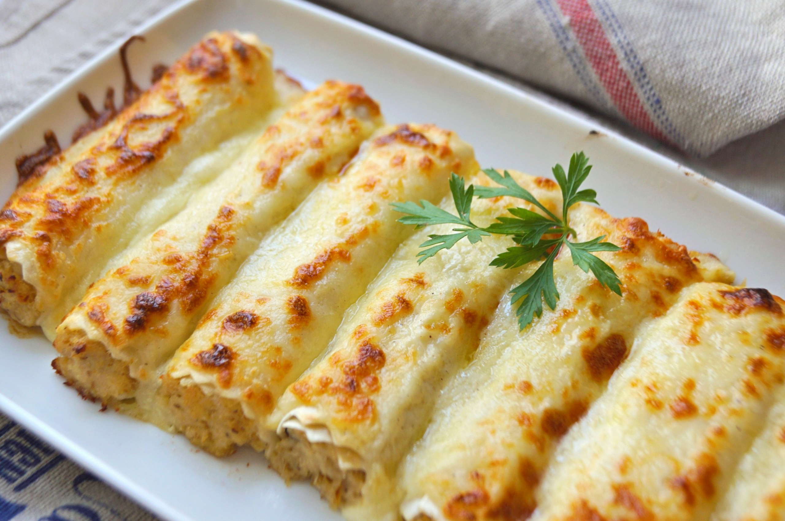

Canelones

This very popular Cannelloni dish appears all year round in Spain but “Canelones”, as they are called in Castellano Spanish, may well appear as a starter on special occasions, like Christmas Eve, when they may boast a more luxurious filling of prawns or lobster.
Not to be confused with the Italian Cannelloni which is made with minced meat, and resembles a bolognese sauce, Spanish Canelones are most frequently enjoyed as the star dish on Boxing Day in Catalonia when they are normally stuffed with the roasted meat leftovers from the previous day.
Ingredients:
- Approx. 20 squares of cannelloni pasta
- 2 tablespoons salted butter
- ¼ lb ground veal
- ½ lb ground pork
- oz. Jamon Serrano or prosciutto, finely chopped
- 1 cup whole milk
- 1 tablespoon flour
- ½ cup grated parmesan cheese plus ¼ cup for topping
- ½ oz. black truffle, very finely chopped
- Pinch of salt
- Dash of pepper
- Pinch of nutmeg
- 1 egg, beaten
Steps:
- Preheat the oven to 350 degrees.
- Bring a large pot of water to the boil. Add salt , and one by one add the pasta to the water, cooking until al dente, about 12-14 minutes. Drain the water, and move the pasta to a cheese cloth to cool off. Set aside.
- In a large pan, heat the butter on a high flame until it melts and becomes foamy. Add the veal and pork and cook on high until it is completely browned. Add the jamon, cooking until it softens. Drain the fat from the pan. Add the milk, flour and parmesan, combine well.
Add the truffles, salt, pepper, nutmeg, combine and bring to a simmer. Cook for 10-12 minutes, stirring often. Take the pan off the heat, and let it cool. Stir in the egg.
- Once the meat is cool enough to handle, evenly divide the mixture between the pasta. Put the mixture at one end, and roll the pasta up. (If you are using the pasta tubes, simply stuff them with the mixture.) Place the rolls in a 9 inch square baking dish, in a single layer. Cover with the Béchamel sauce (method below), and top with the remaining parmesan cheese. Bake for 25 minutes, until bubbling and the cheese is crispy and golden brown.